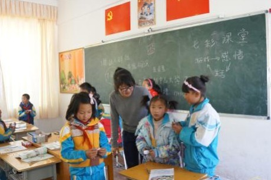

"七彩课堂" 助林芝少年儿童快乐成长
桂电志愿者网 日期：2015-04-17 来源：天津
为深入贯彻落实团中央书记处把共青团关爱农民工子女志愿服务行动，打造成共青团在服务青少年方面信得过、可持续品牌的重要指示精神，增强关爱效果，确保志愿服务内容持续、均衡、深入推进。2013年3月，共青团团林芝地委在林芝地区已有的“七彩小屋”活动阵地上的基础上，在全地区范围内广泛开展志愿者关爱农民工子女专项行动之“七彩课堂”活动。
“七彩课堂”课程涵盖生活伦理、体验拓展、体育文化、趣味英语（数学）和艺术体验等课程，首先在农民工子女占比达78％的林芝地区第二小学开设，共20课时，覆盖3－5年级19个班级，817名学生。

通过开展七彩课堂系列活动培养学龄青少年（3－5年级）健全的人格与健康的性格，培养农民工子女对学习的兴趣，帮助其养成良好的学习习惯；提高其沟通交流能力，增强其独立解决实际问题的能力。其中通过生活伦理的体验性学习，让其提升生活适应力，感受生活的快乐；通过拓展训练，让学生实现自我突破和培养团队合作精神；通过艺术体验的体验学习，提升学生艺术欣赏能力和培养创意。
据了解，共青团林芝地区委员会还将继续坚持组织化动员与社会化动员相结合，进一步扩大结对关爱行动覆盖面并巩固接力机制，以探索服务新模式为突破口，不断在实践中总结经验，探索创新，让农民工子女在“七彩课堂”中体验快乐，收获成长。
【责任编辑：王晓东】